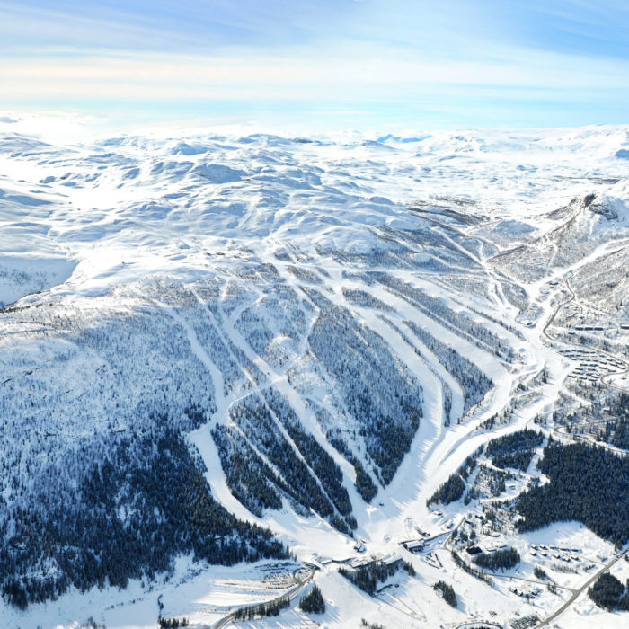
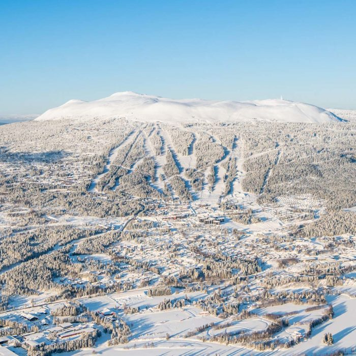
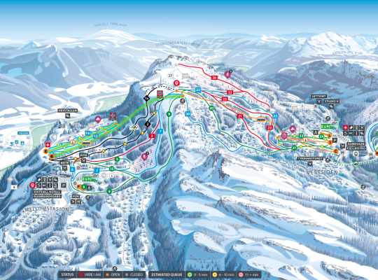
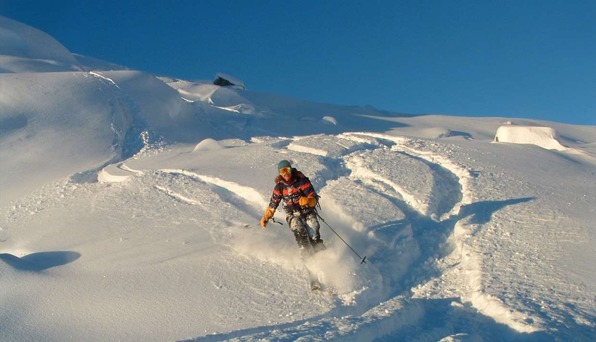
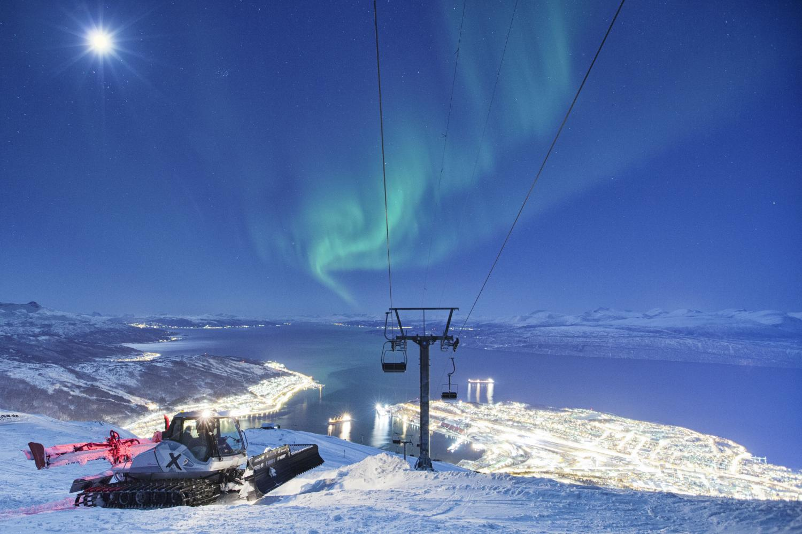

Norge er et land med dype daler og høye fjell. Det gjør at det er et land med mange muligheter for å finne ekstrem natur. Altså vil man finne utallige muligheter til offpiste kjøring. Dersom du på motsatt side ikke har stått så ofte på ski før, er Norge også et land med mange forksjellig type alpinanlegg. Dette gjør at det er land det enkelt er lett å lære seg å stå på ski i. Derfor sier man at Norge er en skidestinasjon for alle. Bestemor, proffen, barnet, trikseren eller nybegynneren! Vil du videre fra Norge og utforske utenlandske skidestinasjoner trykk her.
Hemsedal byr på et av de beste stdene i Norge når det kommer til ski og afterski. Det er store fjell og mange av dem, dette gjør bakkene innholdrike nok til å mette behovet for en som lever av ski, og en som ikke pleier å stå på ski. Dersom du liker å stå offpist kan Totteskogen, Lille Matterhorn og Djeveldalen være steder for deg! Det finnes og mange fjell på alle kanter av Hemsedal som gir gode muligheter for blant annet randone.
Trysil er Norges største skianlegg. Her er det gode muligheter for offpist i for eksempel Vihammerskogen. Ikke nok med det byr Trysil på mange bakker og har egne barneområder! Dersom du vil ha topptur med skiene på ryggen Brannvakthytta på toppen av Trysilfjellet. Med mulighet for bakke, utfor og parkkjøring er Tryil noe du burde oppleve.
Kvitfjell har både gode skibakker, men er også kjent for sine gode matopplevelser. Nyt et måltid med panoramautsikt over fjellene. Det finnes bakker for barna og olympiske nivåer! Det er ikke like mange offpist muligheter, men alpinanlegget er noe man virkelig vil oppleve!
Sogndal er et av de absolutt beste offpiststedene i hele norge. Et vinter-idyll! På den ene siden har de løyper som er krevende og utfordrende, dette passer godt til deg som lever for ski. i tillegg har de trygge barnebakker. Det er Norges beste frikjøring utenfor heisen, med kjempestort areal og gode snøforhold. Det er faktisk så bra at det er et skimerke som heter SGN, det står for Sogndal ski og baserer skiene sine på Sogndal og deres skiforhold!
Narvik er noe du ikke finner på alle lister. Først og fremst er skikjøringen spektakulær, fordi fjelle går ned i havet. Et av de nordligste stedene i Norge, som vil si at det er praktfulle fjell! Dette er nok et sted for den litt mer erfarne skikjøreren, men noe man burde sette opp på bucketlisten sin. Det er utrolige offpist muligheter og opplevelser du ikke vil få noe annet sted. Hva er vel bedre enn å pumpe pudder samme sted som du ser nordlys?
